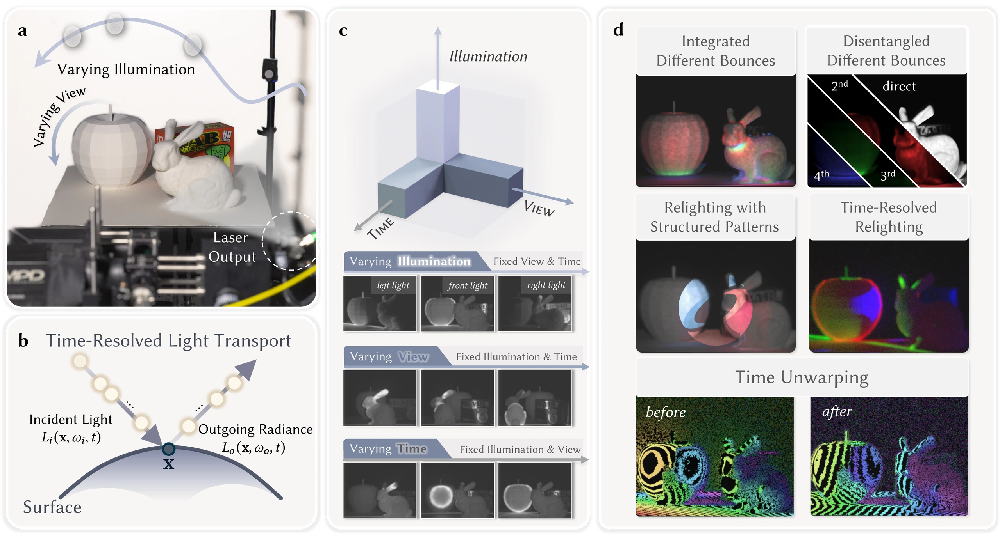

GenPIE: A Time-Resolved Plenoptic Imager
Research overview
GenPIE reconstructs light transport across space, viewing direction, and time from sparse transient observations. A reconfigurable capture system separates illumination from detection, while generative geometry priors and inverse transient rendering recover regions that are difficult to observe. The resulting representation supports applications such as separating light bounces, correcting time distortion, and changing illumination over time.
Summary · Read original ↗01 / 01
